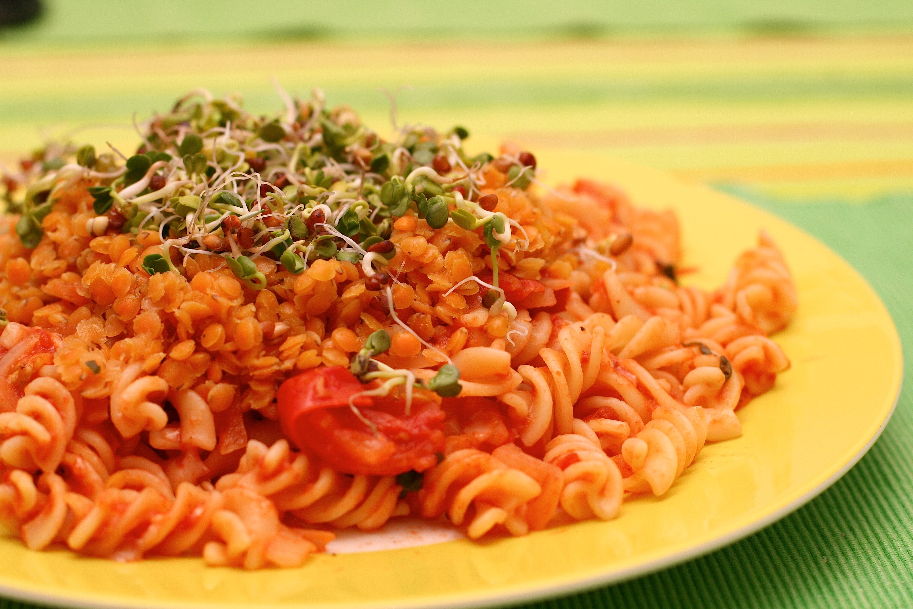

Lazy Student Pasta

Ingredients:
- 500g pasta
- 200g tin of chopped tomatoes
- 200g tin of green lentils
- 200g tin of kidney beans in chili sauce
- Curry powder (to taste)
- Grated cheese (to serve)
Steps:
- Add the tomatoes, lentils, kidney beans, and curry powder to another saucepan and heat on a medium heat until it starts to bubble, lower the heat and simmer for 10-15 minutes.
- Meanwhile, boil a large pan of water. Add the pasta and cook according to the packet's instructions.
- Drain the pasta and serve with grated cheese.